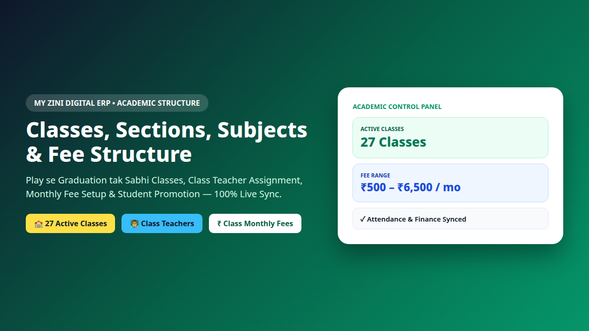
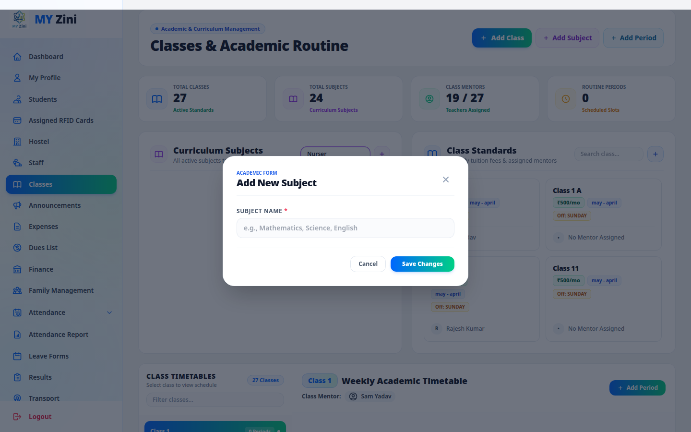
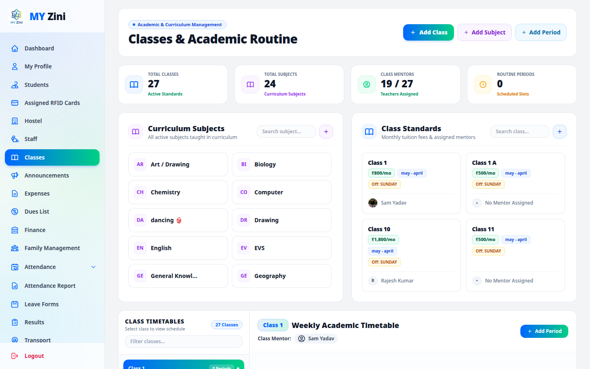
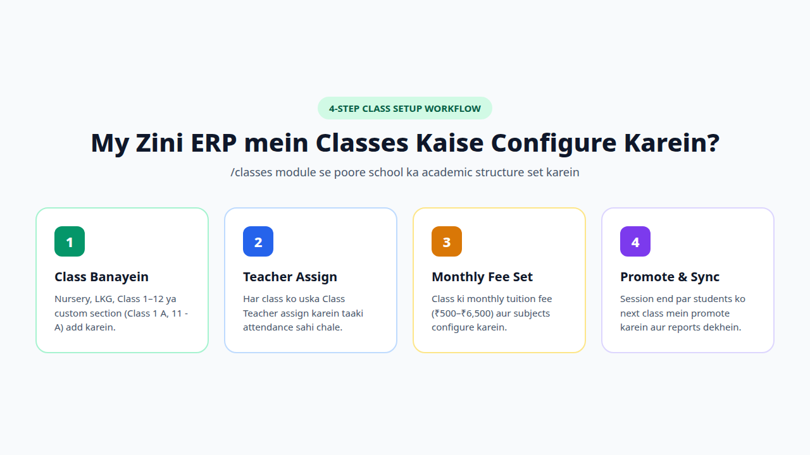
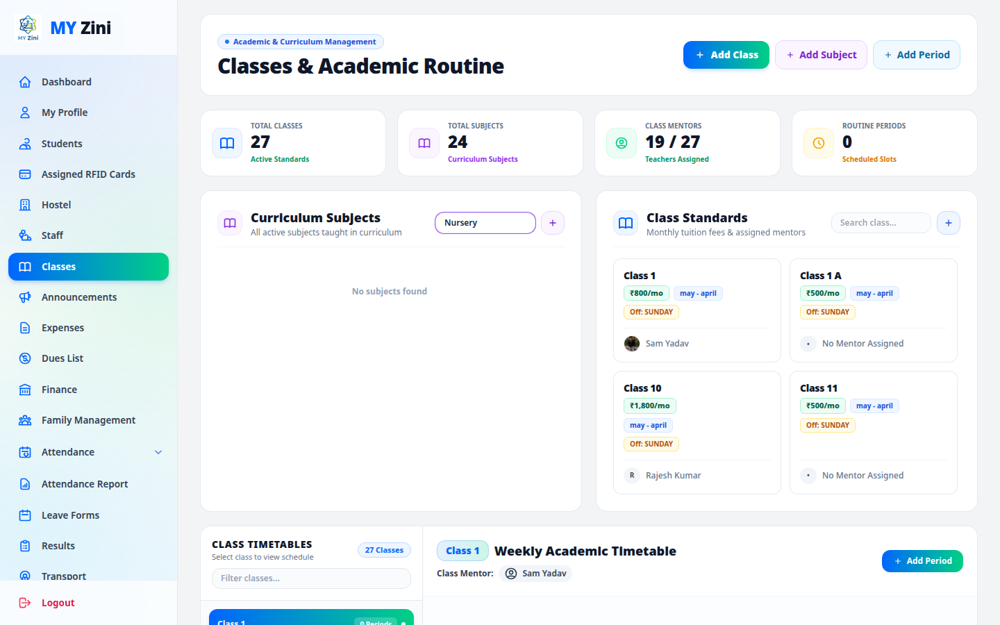
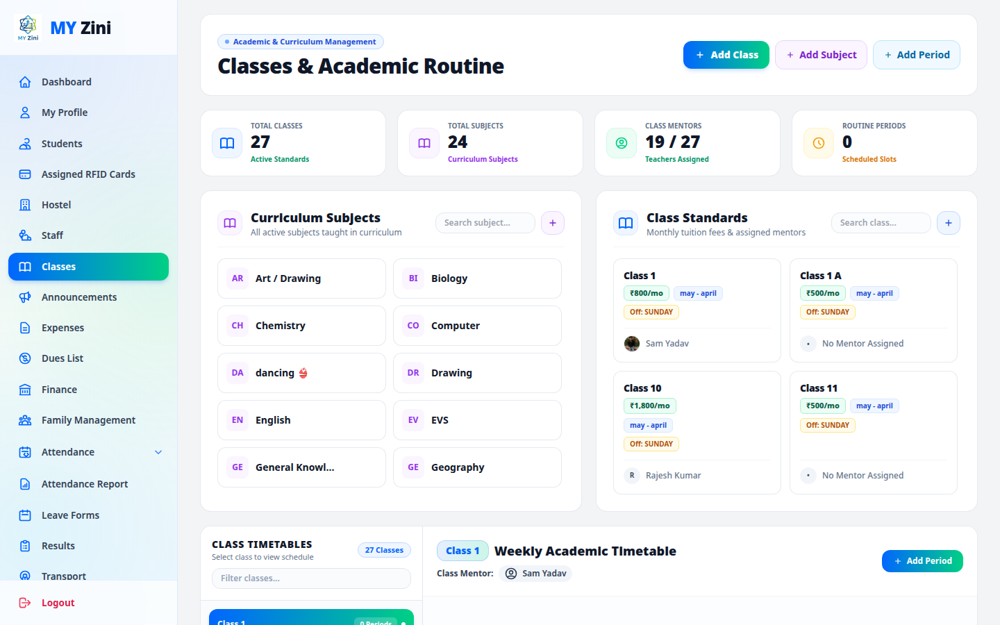
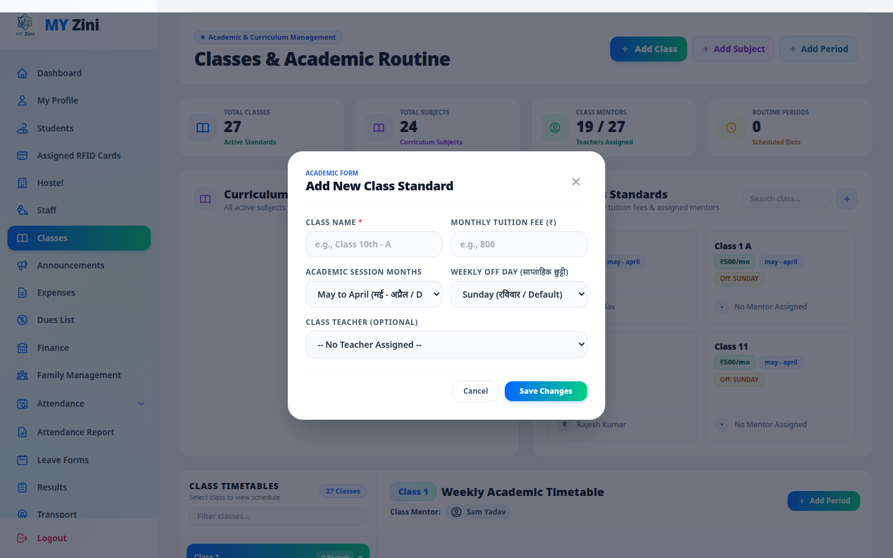
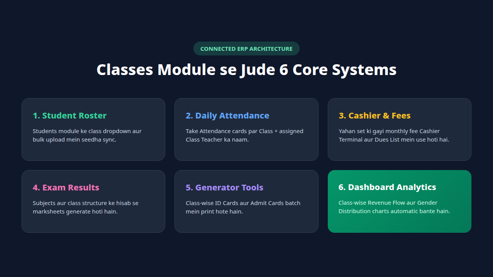
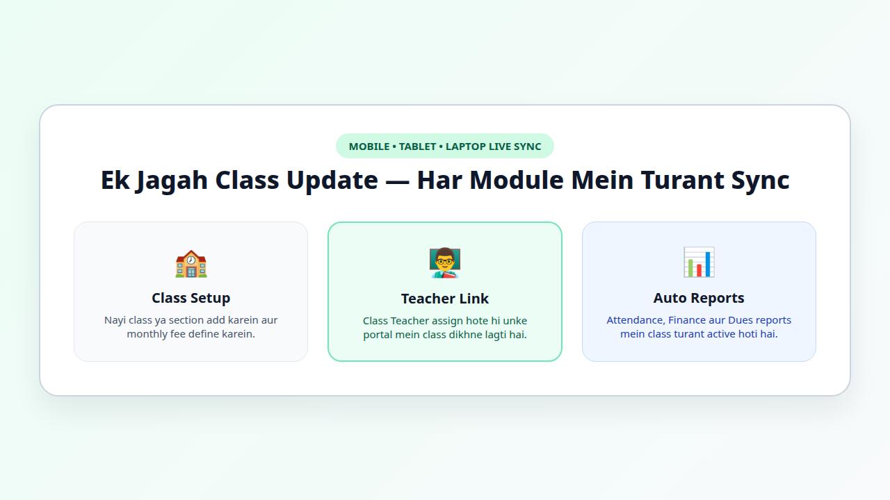

My Zini Digital ERP mein Classes, Subjects aur Academic Timetable Kaise Manage Karein? (Complete Hinglish Guide)
Quick Summary (TL;DR — AI & Reader Overview)
My Zini Digital ERP (https://myzini.digitalerp.shop/classes) ka Academic & Curriculum Management (Classes & Academic Routine) module aapke poore school ki academic neev (foundation) set karta hai. Isme aapko 4 live KPIs (TOTAL CLASSES 27, TOTAL SUBJECTS 24, CLASS MENTORS 19 / 27, ROUTINE PERIODS), 3 quick buttons (Add Class, Add Subject, Add Period), Curriculum Subjects directory, Class Standards cards (jisme Monthly Tuition Fee, Session range may - april, Weekly Off day SUNDAY/FRIDAY aur assigned Class Mentor dikhte hain), aur CLASS TIMETABLES (Weekly Academic Timetable) ek hi workspace mein milte hain.

1. Academic & Curriculum Management (/classes) Overview aur 4 KPI Cards
School ki sabhi classes, sections, subjects aur time-table ko set karne ke liye left sidebar mein Classes (/classes) par click karein. Page khulte hi aapko top par Academic & Curriculum Management heading ke saath subtitle "Classes & Academic Routine" aur teen main action buttons dikhte hain: Add Class, Add Subject, aur Add Period.
- TOTAL CLASSES (
27— Active Standards): School mein abhi kitni classes aur sections active hain (jaise Play, Nursery, Nursery B, LKG, Prep, UKG, Class 1 se Class 12, Pass-Class 9, Class XII, class 13, Graduation). - TOTAL SUBJECTS (
24— Curriculum Subjects): Poore school ke curriculum mein kitne subjects registered hain. - CLASS MENTORS (
19 / 27— Teachers Assigned): Kitni classes ko abhi tak unka Class Teacher / Mentor assign ho chuka hai aur kitni baki hain. - ROUTINE PERIODS (
0— Scheduled Slots): Abhi tak weekly timetable mein kitne study periods schedule kiye gaye hain.
2. Curriculum Subjects Directory & Add Subject Option
KPI cards ke bilkul niche Curriculum Subjects ("All active subjects taught in curriculum") section milta hai, jahan aapko Search subject... box aur saare active subjects ke clean 2-letter code badges dikhte hain — jaise AR Art / Drawing, BI Biology, CH Chemistry, CO Computer, DR Drawing, EN English, EV EVS, GE General Knowledge, GE Geography, HI Hindi, HI History, MA Mathematics, MO Moral Science, PH Physical Education, SA Sanskrit, SC Science, SO Social Science, SO Social Studies, aur UR Urdu.

Naya subject jodne ke liye top par Add Subject par click karein — ek baar subject yahan add ho jaane ke baad woh aapke Weekly Timetable aur Exam Results modules mein automatically available ho jata hai!
3. Class Standards: Monthly Fee, Session, Weekly Off & Mentors
Thoda niche scroll karne par aapko Class Standards ("Monthly tuition fees & assigned mentors") section milta hai, jahan Search class... aur Add New Class Standard button ke saath har class ka alag card dikhta hai.


Har Class Standard card par aapko 5 zaroori details ek hi nazar mein dikhti hain:
- Class / Section Name: Jaise Class 1, Class 1 A, class 11 -A, class 11 -C, Nursery, Nursery B, Play, Prep, LKG, UKG, Graduation.
- Monthly Tuition Fee: Har class ki fixed monthly fee — jaise Class 1 (₹800/mo), Class 10 (₹1,800/mo), class 11 -A (₹2,500/mo), Play (₹6,500/mo), Prep (₹6,200/mo), LKG (₹600/mo), UKG (₹700/mo), Nursery (₹500/mo). Yehi fee seedha Cashier Terminal (
/shortcut) aur Dues List mein sync hoti hai! - Academic Session Range: Jaise
may - april. - Weekly Off Day: Har class ke liye alag weekly holiday set ki ja sakti hai — jaise baaki sabhi classes mein
Off: SUNDAYaur Nursery meinOff: FRIDAYdikh raha hai! - Assigned Class Mentor: Class teacher ka naam (e.g. Sam Yadav, Rajesh Kumar, Deepak Jha, Vikram Yadav, Priya Singh, Kavita Sharma, Sneha Gupta) ya • No Mentor Assigned badge.

4. CLASS TIMETABLES: Weekly Academic Timetable & Add Period
Page ke sabse niche aapko CLASS TIMETABLES ("Select class to view schedule — 27 Classes") workspace milta hai jahan aap poore school ka daily study routine bana sakte hain:

- Filter Classes & Period Counter: Left panel mein
Filter classes...box ke niche sabhi 27 classes ke pills aur unke current scheduled periods (jaiseClass 1 — 0 Periods) dikhte hain. - Weekly Academic Timetable Panel: Right side mein selected class (e.g. Class 1) aur uske Class Mentor: Sam Yadav ka naam dikhta hai.
- Add Period & + Add First Period: Jab kisi class ka routine empty hota hai toh message aata hai — "No timetable set for Class 1 — Add periods to create the daily study routine and assign subject teachers." Aap Add Period ya + Add First Period dabakar period timing, subject (from your 24 Curriculum Subjects), aur subject teacher assign kar sakte hain!

Weekly Academic Timetable Banane ka Step-by-Step Tarika
Ek achha timetable school ke poore din ko discipline mein rakhta hai. CLASS TIMETABLES section mein har class ka routine set karte waqt yeh 4 steps follow karein:
- Class Select Karein: Left list mein
Filter classes...ka use karke apni class (jaise Class 1, Class 5, ya Class 10) par click karein. Right side mein us class ka naam aur Class Mentor dikh jayega. - Add Period / + Add First Period Dabaein: Period number, start time aur end time (e.g. 9:00 AM – 9:45 AM), aur day select karein.
- Subject aur Subject Teacher Chunein: Apne 24 Curriculum Subjects mein se subject (jaise
MA MathematicsyaEN English) aur Staff Management se teacher chunein taaki har teacher ko pata ho unka kaun sa period kis class mein hai. - Routine Periods KPI Verify Karein: Jaise-jaise aap periods add karte hain, page ke top par ROUTINE PERIODS counter (Scheduled Slots) aur class pill par period count (
0 Periodsse badhkar6 Periods,8 Periods) live update hota rehta hai.
Live Class Standards & Monthly Fee Breakdown (Verified on Portal)
Live My Zini portal par aap dekh sakte hain ki pre-primary se lekar senior secondary aur graduation tak har level ke liye alag-alag fee aur mentor structure set kiya gaya hai: Play (₹6,500/mo, Mentor: Sandeep Paswan), Prep (₹6,200/mo, Mentor: Deepak Jha), Nursery (₹500/mo, Off: FRIDAY, Mentor: Sam Yadav), Nursery B (₹500/mo), LKG (₹600/mo, Mentor: Kavita Sharma), UKG (₹700/mo, Mentor: Sneha Gupta), Class 1 (₹800/mo, Mentor: Sam Yadav), Class 2 (₹850/mo, Mentor: Deepak Jha), Class 3 (₹900/mo, Mentor: Mohammed Sameer), Class 4 (₹950/mo, Mentor: Vikram Yadav), Class 5 (₹1,000/mo, Mentor: Sandeep Paswan), Class 6 (₹1,100/mo, Mentor: Amit Verma), Class 7 (₹1,200/mo, Mentor: Rohan Mishra), Class 8 (₹1,300/mo, Mentor: Priya Singh), Class 9 (₹1,500/mo, Mentor: Rajesh Kumar), Class 10 (₹1,800/mo, Mentor: Rajesh Kumar), class 11 -A (₹2,500/mo, Mentor: Sam Yadav), class 11 -C (₹2,000/mo, Mentor: Sam Yadav), aur Graduation (₹0/mo). Is tarah har class ki fees aur mentor ek hi screen par crystal clear rehte hain!
5. Classes Module Poore ERP ko Kaise Control Karta Hai?


Bahut se schools yeh galti karte hain ki woh pehle students add kar dete hain aur baad mein classes/fees banate hain. Sahi tarika yeh hai ki naye academic session ki shuruat mein hi /classes par yeh 5 kaam sabse pehle poore kar liye jayein:
- Sabhi Classes aur Sections Banayein: Agar Class 1 mein do sections hain toh Class 1 A aur Class 1 B alag-alag standards bana lein taaki attendance aur marksheets mix na hon.
- Har Class ki Exact Monthly Fee Set Karein: Yahan set ki gayi monthly fee automatically Payments & Shortcuts Hub (
/shortcut) ke dropdown aur Apply Monthly Fees mein use hoti hai. - 100% Class Mentors Assign Karein: KPI card par
CLASS MENTORS 19 / 27ko27 / 27karne ki koshish karein — taaki/attendancepar kisi bhi class mein No Class Teacher na dikhe. - Curriculum Subjects Clean Rakhein: Sirf wahi active subjects rakhein jo aapke school mein padhaye jaate hain, taaki Exam Results aur Timetable mein sirf valid subjects dikhein.
- Weekly Timetable Set Karein: Har class mein kam se kam 6–8 daily periods add kar dein taaki teachers aur students dono ko apna daily routine clear rahe.
Naye Academic Session (May – April) ki Taiyari ke 4 Golden Tips
- Fee Revision Samay Par Karein: Jab naya session shuru ho aur school management monthly fee badhane ka decision le, toh Apply Monthly Fees chalane se pehle
/classespar har Class Standard ki fee update kar dein taaki naye mahine ke bills updated rate se banein. - Substitute & Co-Mentors Track Karein: Agar koi Class Mentor lambi chhutti par jaate hain, toh
/classespar turant doosre active teacher ko assign kar dein jisse Take Attendance aur Weekly Timetable smoothly chalta rahe. - Duplicate Subjects Se Bachein: Naya subject add karne se pehle
Search subject...box mein zaroor check kar lein ki woh subject pehle se toh maujood nahi hai — isse curriculum list bilkul clean aur professional rehti hai. - Mobile par Timetable Review: Principal aur teachers apne phone ya tablet par bhi CLASS TIMETABLES kholkar dekh sakte hain ki kis period mein kaun sa teacher kis class mein padha raha hai.
6. Quick Reference Table (Classes Module Options)
| Option / Section | Kahan Milta Hai | Exact Kaam |
|---|---|---|
| Add Class / New Class Standard | /classes Top & Standards | Nayi class/section, monthly fee, session aur weekly off set karna |
| Add Subject | Top Right | School curriculum mein naye subjects (2-letter badge ke saath) jodna |
| Add Period / + Add First Period | Top & Timetables | Class-wise weekly academic timetable aur subject teachers assign karna |
| Search Subject / Search Class | Section Toolbars | 24 subjects ya 27 classes mein se kisi ko turant filter karna |
| Class Mentors KPI | Top KPI Grid | Track karna ki kitni classes ko Class Teacher assign ho chuke hain |
Frequently Asked Questions (FAQs)
1. Kya har class ke liye alag-alag Monthly Tuition Fee set kar sakte hain?
Haan! Jaise aap Class Standards mein dekh sakte hain, Nursery ₹500/mo, LKG ₹600/mo, Class 1 ₹800/mo, Class 10 ₹1,800/mo, aur Play ₹6,500/mo — har class ki apni alag monthly fee set hoti hai.
2. Kya alag-alag classes ke liye alag Weekly Off day (jaise Friday ya Sunday) rakh sakte hain?
Bilkul! Live portal par dekha gaya ki Nursery mein Off: FRIDAY aur baaki classes mein Off: SUNDAY set hai — yani har class ka weekly off customize ho sakta hai.
3. Class Mentor assign karne se kya fayda hota hai?
Class Mentor assign hote hi unka naam /attendance ke class cards, Class Standards, aur Weekly Academic Timetable sabhi jagah dikhne lagta hai aur teacher apne portal se class manage kar sakte hain.
4. Curriculum Subjects mein subject badges kaise dikhte hain?
Har subject ko ek 2-letter code badge milta hai (jaise Mathematics ke liye MA, Science ke liye SC, English ke liye EN, Computer ke liye CO), jisse timetable aur results mein pehchan aasan hoti hai.
5. Weekly Academic Timetable mein naya period kaise add karein?
Page ke niche CLASS TIMETABLES section mein left side se apni class chunein aur right side mein Add Period ya + Add First Period par click karke subject aur teacher select karein.
6. Kya Classes module mein banaye gaye sections (jaise Class 1 A, Class 11 -A) Students aur Dues List mein bhi aate hain?
Ji haan! Yahan jo bhi class ya section aap banate hain, woh turant Students, Attendance, Attendance Report, Cashier Terminal, aur Fee Dues Radar ke dropdowns mein sync ho jata hai.
7. Academic Session (may - april) kahan dikhta hai?
Har Class Standard card par monthly fee ke bilkul niche us class ka academic session range (jaise may - april) saaf dikhta hai.
8. Kya Classes & Timetable module mobile phone par bhi use ho sakta hai?
Haan, poora /classes page responsive hai — mobile, tablet aur laptop teeno par KPIs, subject badges, class cards aur timetable cleanly adjust hote hain.
9. Agar kisi class ka mentor abhi assign nahi hua ho toh kaise pata chalega?
Top par CLASS MENTORS KPI (e.g. 19 / 27) dikhata hai aur jin classes mein teacher nahi hai unke card par • No Mentor Assigned likha hota hai.
10. Apne school ke liye My Zini Digital ERP kaise shuru karein?
Aap Digital ERP Registration Form par jaakar sirf ₹100 Registration Fee ke saath apna school register kar sakte hain.
11. Kya ek hi class ke multiple sections (jaise Class 1 aur Class 1 A) alag-alag fees ke saath ban sakte hain?
Haan! Live portal par dekha gaya ki Class 1 ki monthly fee ₹800/mo aur Class 1 A ki monthly fee ₹500/mo set hai — yani aap har section ke liye alag fee aur mentor rakh sakte hain.
12. Agar kisi coaching ya college mein Graduation batch add karna ho toh kya ₹0/mo fee rakh sakte hain?
Bilkul! Live portal par Graduation class ₹0/mo ke saath configured hai, jahan aap one-time ya custom exam fees alag se apply kar sakte hain bina kisi dikkat ke.
13. Filter classes box aur Search class box mein kya antar hai?
Search class... upar wale Class Standards cards ko filter karta hai (fees aur mentor dekhne ke liye), jabki Filter classes... niche wale CLASS TIMETABLES list ko filter karta hai (weekly periods aur teachers dekhne ke liye).
14. Kya Timetable mein ek hi class mein multiple subjects aur alag-alag teachers add ho sakte hain?
Haan! Add Period ya + Add First Period ke zariye aap har din ke har period ke liye alag subject aur alag subject teacher assign kar sakte hain, jisse poori class ka daily study routine clear ho jata hai aur koi clash nahi hota.
15. Agar school mein naye subjects (jaise Coding ya Robotics) shuru hon toh kahan add karein?
/classes par top-right mein Add Subject button par click karein, subject ka naam aur 2-letter code enter karein — turant woh Curriculum Subjects list mein jud jayega aur timetable mein use karne ke liye ready ho jayega.
16. Kya Classes module laptop, tablet aur smartphone teeno devices par adjust hota hai?
Bilkul! Chahe aap laptop par poora timetable setup kar rahe hon ya mobile phone par kisi class ki monthly fee aur mentor check kar rahe hon, poora layout screen ke hisab se automatically adjust ho jata hai aur cloud par Live Sync rehta hai.
School Academics & Timetable ko Digital Banayein!
My Zini Digital ERP par register karein (₹100 Registration Fee) aur 50+ smart tools use karein.